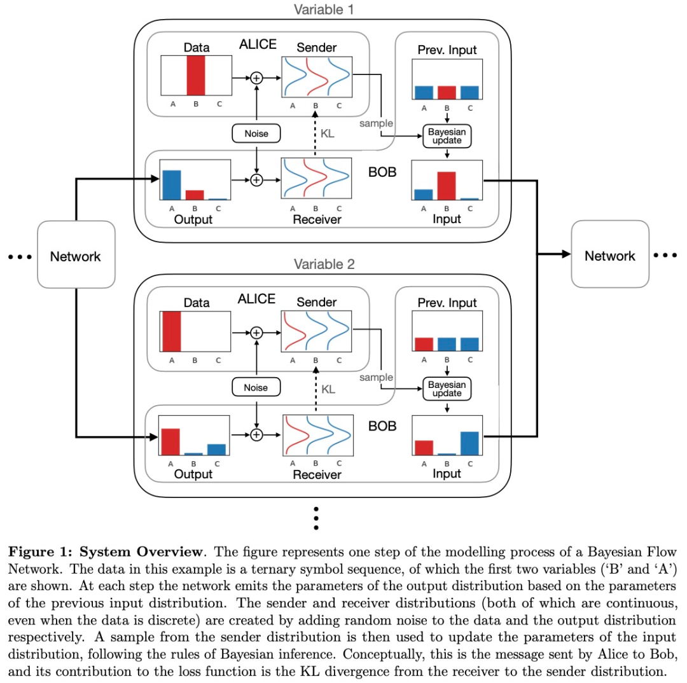
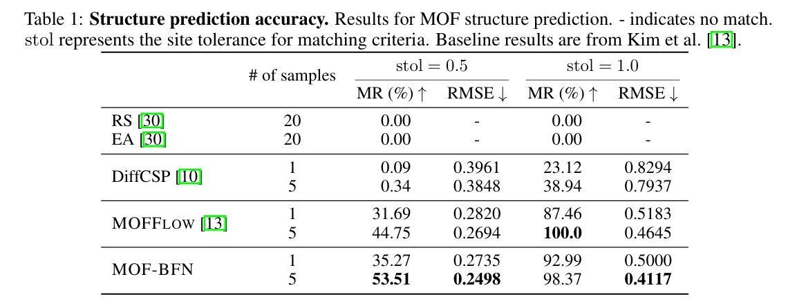
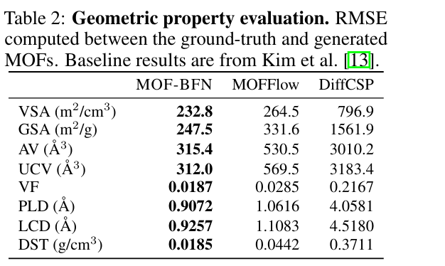
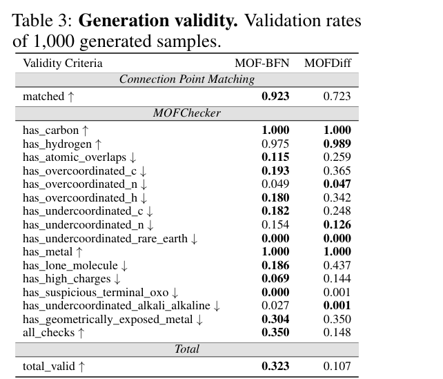

MOF-BFN: Metal-Organic Frameworks Structure Prediction via Bayesian Flow Networks¶
1. 研究背景与核心挑战 (Background & Challenges)¶
- MOF 的复杂性：金属有机框架（MOFs）由金属节点和有机配体通过配位键组成，具有极高的比表面积和可调孔隙率。但其单胞（Unit Cell）内通常包含数百甚至上千个原子。
- 计算成本高：传统的从头计算（如 DFT）或原子级生成模型在面对如此庞大的体系时，计算效率极低。
- 周期性与层级化：MOF 本质上是三维周期性的，且具有明显的层级结构（即由建筑块拼装而成）。
- 现有模型缺陷：
- 离散化误差：基于扩散（Diffusion）和流匹配（Flow Matching）的模型依赖 SDE/ODE 求解，采样时的数值离散化会产生累积误差。
- 取向建模难：现有的模型（如 MOFDiff）往往需要繁琐的后处理来优化建筑块的旋转取向。
2. 核心创新点 (Key Innovations)¶
这篇论文最主要的贡献是将贝叶斯流网络（BFN）引入 MOF 领域，并针对其物理特性进行了三大创新设计：
① 引入贝叶斯流网络 (BFN) 框架¶
- 创新逻辑：不同于扩散模型在数据空间加噪，BFN 通过在概率分布的参数空间进行贝叶斯更新来细化生成结果。
- 优势：完全绕过了 SDE/ODE 的数值求解，从根本上消除了采样过程中的离散化截断误差，使生成过程更稳定、更准确。
② 显式周期性建模：分数坐标系 (Fractional Coordinates)¶
- 创新逻辑：模型不再直接预测原子的绝对笛卡尔坐标，而是预测相对于晶格矢量的分数坐标 \(F \in [0, 1)^3\)。
- 优势：将坐标映射到 3D 环面（Torus）空间，自然地融入了周期性边界条件（PBC），确保生成的结构在数学上符合晶体的无限延伸特性。
③ 旋转流形建模：Bingham BFN¶
- 创新逻辑：这是本文的技术重难点。建筑块不仅有位置，还有旋转（朝向）。论文将旋转表示为单位四元数（Unit Quaternions），并首次提出了 Bingham BFN。
- 优势：Bingham 分布是定义在单位超球面上处理方向数据的理想分布。通过 Bingham BFN，模型能高效地在 4D 单位超球面上生成符合物理约束的旋转取向，解决了 \(SO(3)\) 空间的建模难题。
3. 理论基础 (Theoretical Foundations)¶
3.1 MOF 的表示¶
3.1.1 原子的全局表示法¶
在最基础的层面，一个 MOF 晶体可以被看作是三维空间中无限周期的原子排列。为了描述它，我们定义了一个三元组 \(M = (L, X, A)\)：
- 晶格矩阵 \(L = [\mathbf{l}_1, \mathbf{l}_2, \mathbf{l}_3] \in \mathbb{R}^{3 \times 3}\)：
它定义了单胞（Unit Cell）的大小和形状。
- 笛卡尔坐标矩阵 \(X = [\mathbf{x}_i]_{i=1}^N \in \mathbb{R}^{3 \times N}\)：
存储单胞内 \(N\) 个原子的绝对空间位置。
- 原子类型矩阵 \(A = [\mathbf{a}_i]_{i=1}^N \in \mathbb{R}^{h \times N}\)：
通常使用 One-hot 编码表示每个原子的元素种类（如 C, O, Zn 等）。
周期性公式：
任何一个原子的位置都可以通过下式表达：\(\{(a'_i, x'_i) \mid a'_i = a_i,\; x'_i = x_i + L t,\; \forall t \in \mathbb{Z}_3 \times 1 \}\)
这里的 \(\mathbf{t}\) 是整数向量，代表在三个晶格矢量方向上的偏移。
3.1.2 不变晶格参数 \(\xi\)¶
直接预测矩阵 \(L\) 往往比较困难，因为它包含旋转成分。为了简化建模，我们通常使用**不变晶格参数：
$\(\xi = (a, b, c, \alpha, \beta, \gamma)\)$ 其中 \(a, b, c\) 是边长，\(\alpha, \beta, \gamma\) 是夹角。
一种常见的构造方式（将 \(l_1\) 置于 x 轴）：
- \(l_1 = (a, 0, 0)\)
- \(l_2 = (b\cos\gamma, b\sin\gamma, 0)\)
- \(l_3 = (c\cos\beta, c\frac{\cos\alpha - \cos\beta\cos\gamma}{\sin\gamma}, c\sqrt{1 - \cos^2\beta - (\frac{\cos\alpha - \cos\beta\cos\gamma}{\sin\gamma})^2})\)
通过这套公式，只要有了 6 个物理参数，就能唯一确定矩阵 \(L\)。
Trick：在实际的生成模型（如 Lin 等人的研究）中，为了将这些正值或区间限制的参数映射到全实数空间 \(\mathbb{R}^6\)，会对长度取 \(\log\)，对角度取 \(\tan\) 处理，这样更利于神经网络的收敛。
3.1.3 核心：块级层次表示¶
由于 MOF 原子数巨大，直接生成所有原子坐标（\(N\) 很大）会导致计算量爆炸。研究者提出了“建筑块（Building Blocks）”的概念。
我们将单胞描述为 \(M_B = (L, X_B, R_B, B)\)，其中：
- \(X_B\) (中心位置)：每个建筑块（如金属簇或配体）的中心坐标。
- \(R_B \in SO(3)\) (旋转/取向)：描述建筑块在空间中的朝向。
- \(B\) (本地结构)：存储每个块自身的原子构成。
为了让位置信息不受晶格缩放的影响，我们使用分数坐标 \(F\)：$\(\mathbf{f}_B = L^{-1}\mathbf{x}_B \in [0, 1)^3\)$
这样，无论晶格多大，所有块的坐标都被归一化在 \([0, 1)\) 之间。
本地结构中原子的表示：¶
(1) 局部坐标 \(\mathbf{x}_r\) 的表示：PCA 规范化¶
在建筑块 \(\mathcal{C}_j\) 内部，原子的位置 \(\mathbf{x}_r\) 并不是随机分布的，而是采用了一种基于 主成分分析 (PCA) 的“规范局部坐标”（Canonical Local Coordinates）。
-
去中心化：首先将块内所有原子的原始笛卡尔坐标减去该块的几何中心，使块的中心位于 \((0,0,0)\) 。
-
对齐标准轴：通过 PCA 计算原子分布的特征向量矩阵 \(R\)（即主轴方向）。为了消除镜像对称导致的歧义，会根据块内原子的分布方向（向量 \(v_j\)）来确定主轴的正负符号 。
-
结果：最终得到的 \(\mathbf{x}_r\) 是该建筑块在“标准姿态”下的内部坐标 。这样，同一种类型的建筑块（如某种苯环配体）无论在哪个 MOF 中，其 \(\mathbf{x}_r\) 的数值都是完全一致的常数 。
(2) 确定某个具体原子的全局位置¶
要确定 MOF 晶格中某个原子的具体绝对位置 \(\mathbf{x}_{global}\)，需要将预测出的各种参数带入以下逻辑：
- 确定块中心（分数坐标 \(\to\) 绝对坐标）： 模型预测出每个块中心的分数坐标 \(\mathbf{f}_j \in [0, 1)^3\) 。通过与晶格矩阵 \(L\) 相乘，将其转回绝对空间位置 ：
$$ \text{块中心绝对位置} = L \mathbf{f}_j $$
-
应用旋转（四元数 \(\to\) 旋转矩阵）： 模型预测出块的取向四元数 \(q_j\) 。根据公式 (1)，将 \(q_j\) 转换为 \(3 \times 3\) 的旋转矩阵 \(R(q_j)\) 。这个矩阵描述了该块相对于“标准姿态”旋转了多少。
-
合成最终坐标：
对于块内第 \(r\) 个原子，其最终位置为：$\(\mathbf{x}_{global} = L \mathbf{f}_j + R(q_j) \mathbf{x}_r\)$
- \(L \mathbf{f}_j\)：确定块在单胞里的哪儿（由分数坐标决定）。
- \(R(q_j) \mathbf{x}_r\)：确定原子相对于块中心摆放在什么位置和角度 。
3.2 旋转的数学：单位四元数 (Unit Quaternions)¶
描述建筑块的旋转（\(R_B\)）时，如果使用 \(3 \times 3\) 矩阵会存在冗余（9个值描述3个自由度）。因此，模型通常采用单位四元数 \(q = [w, x, y, z]\)，满足 \(\|q\| = 1\)。
从四元数到旋转矩阵的转换公式：
这种表示法不仅紧凑，而且能有效避免“万向节死锁”问题，非常适合深度学习中的梯度下降。
3.3 任务定义：生成式建模¶
有了上述表示方法，MOF 的结构预测和生成任务可以转化为对以下概率分布的建模：
- 结构预测 (Structure Prediction)：
已知块类型 \(B\)，预测晶格和排列：\(p(\xi, F, Q | B)\)。
- 从头生成 (De novo Generation)：
同时生成块类型及其空间排列：\(p(\xi, F, Q, B)\)。
这种表示法的精妙之处在于化繁为简：它将成千上万个原子的坐标问题，简化为了少量建筑块的“位置 (\(F\)) + 旋转 (\(Q\)) + 类型 (\(B\))”问题，配合不变晶格参数 \(\xi\)，为大规模 MOF 筛选和 AI 设计奠定了数学基础。
3.4 贝叶斯流网络 (Bayesian Flow Networks)¶

贝叶斯流网络（Bayesian Flow Networks, BFNs）是该论文的核心生成算法。相比于传统的扩散模型（Diffusion Models）直接在数据空间加噪，BFN 的核心哲学是：在概率分布的参数空间（Parameter Space）进行演化。
我们可以将 BFN 的原理拆解为“发送者-接收者”博弈模型，通过以下四个关键数学阶段来理解：
1. 发送者（Sender）：产生带噪声的观测¶
发送者知道真实的干净数据 \(x\)。在每一个步长 \(i\)，发送者根据预设的精度计划（Accuracy Schedule）\(\alpha_i\)，对 \(x\) 进行“模糊化”处理，产生一个观测值 \(y_i\)。
- 解析：\(\alpha_i\) 是精度计划（Accuracy Schedule）。在 \(i=1\) 时精度最低（噪声最大），到 \(i=T\) 时精度最高。这描述了真相如何被污染成观测值的过程。你可以把它想象成：发送者在给接收者发送一封带有干扰电报，随着时间推移，干扰信号越来越弱。
2. 接收者（Receiver）：基于贝叶斯的“信念更新”¶
- 接收者（Receiver）基于观察到的 \(y_i\)，不断修正对 \(x\) 的看法（即更新概率分布的参数）。
- 解析：这是一个典型的贝叶斯推断过程：后验 \(\propto\) 先验 \(\times\) 似然。
- \(p_I(x|\theta_{i-1})\) 是接收者在第 \(i-1\) 步的“信念”（先验）。
- \(p_S(y_i|x; \alpha_i)\) 是新观察到的证据（似然）。
- 更新后的分布由参数 \(\theta_i\) 参数化。
接收者不知道 \(x\)，它手里只有一套关于 \(x\) 可能是什么的“信念”，即参数 \(\theta\)。接收者的目标是通过不断收到 \(y_i\)，利用贝叶斯定理来更新自己的信念。
- 公式解析：
- \(\theta_{i-1}\)：上一时刻我对数据的认知（先验）。
- \(y_i\)：这一时刻我收到的带噪观测。
- \(h\)：\(h\) 函数定义了参数如何“流动”。它本质上是计算 \(p(x|\text{所有已观测到的 } y)\)。
3. 贝叶斯流（Bayesian Flow）：参数的轨迹¶
- 为了研究参数 \(\theta_i\) 本身的统计特性，我们需要对所有可能的观测值 \(y_i\) 进行边缘化（求期望）。
-
解析：\(\delta\) 是狄拉克 \(\delta\) 函数。这个公式表示：给定真相 \(x\) 和上一时刻参数 \(\theta_{i-1}\)，由于 \(y_i\) 是随机采样的，那么下一时刻更新出的 \(\theta_i\) 也是一个随机变量。
-
为了让模型能够训练，我们需要知道在任意时刻 \(i\)，参数 \(\theta_i\) 的分布情况。这就是贝叶斯流分布 \(p_F\)。
- 这个复杂的积分链式公式表达的是：从初始状态 \(\theta_0\)（完全无知，通常是均匀分布或标准正态分布）开始，经过 \(i\) 次贝叶斯更新后，参数 \(\theta\) 演化到了哪里。
- 关键点： 它是一个马尔可夫链的积分累积。在训练阶段，我们不需要真的一步步去迭代更新，通常 \(p_F(\theta_i|x)\) 存在解析解，可以让我们直接从原始数据 \(x\) 跳跃式地采样出中间状态 \(\theta_i\)。
4. 神经网络的角色：模拟发送者¶
在推理（生成）阶段，我们没有真实数据 \(x\)，所以无法产生 \(y_i\)。这时神经网络 \(\phi\) 登场了：
-
解析：网络根据当前的认知参数 \(\theta_{i-1}\) 和时间步 \(t_i\)，给出一个对原数据的最准确估计 \(\hat{x}\)。使用 \(\delta\) 函数意味着模型输出是一个确定的点估计。
-
神经网络查看当前的信念 \(\theta_{i-1}\)。
- 它预测出一个“估计的干净数据” \(\hat{x} = \phi(\theta_{i-1}, t_i)\)。
- 我们用这个预测出来的 \(\hat{x}\) 来替代真实 \(x\)，模拟出一个接收者分布 \(p_R\)。
5. 训练目标：最小化传输损失¶
BFN 的训练不是直接预测噪声，而是最小化发送者（拥有真相）和接收者（模型模拟）之间的差异。
- 直观理解：
- \(p_S\) 是基于真相产生的真实噪声观测。
- \(p_R\) 是基于模型预测产生的虚拟噪声观测。
- 如果模型 \(\phi\) 预测得足够准（即 \(\hat{x} \approx x\)），那么这两个分布就会重合，KL 散度趋于 0。（对于连续变量，这个 KL 散度通常会退化为 MSE（均方误差） 损失；对于分类变量，它会退化为 交叉熵 损失。）
总结：BFN vs 扩散模型¶
在 MOF 预测任务中，BFN 能够同时处理连续的晶格参数（\(\xi\)）和离散的块类型（\(B\)），这就是因为它将所有不同性质的数据都统一到了参数演化这一套数学框架下。
4. MOF-BFN 实现¶
这一节本质上是在说明：MOF-BFN 如何在三个不同的流形空间上建立 Bayesian Flow Network：
- 晶格参数：连续空间 \(\mathbb{R}^6\)
- 分数坐标：环面 \(T^{3\times K}\)
- 取向：四元数球面 \(S^3\)

4.1 晶格参数和坐标¶
4.1.1 连续空间 \(R^6\)（晶格参数 \(\xi\)）¶
-
物理意义：描述晶胞的大小和形状（3条边长 + 3个角度）。
-
数学模型：使用高斯分布 \(N(\xi; \mu, \rho^{-1}I)\)。
-
*更新公式 *： $$ { \mu_i^\xi, \rho_i^\xi } = \left( \frac{\rho_{i-1}^\xi \mu_{i-1}^\xi + \alpha_i^\xi y_i\xi}{\rho_{i-1}\xi + \alpha_i^\xi}, \rho_{i-1}^\xi + \alpha_i^\xi \right) $$
-
理解：这本质上是加权平均。新的均值 \(\mu_i\) 是旧均值和新观测值 \(y_i\) 的组合，权重取决于精度 \(\rho\)（精度的倒数是方差）。
$$ \mathcal{L}\xi = \mathbb{E}^M, i)|^2_2 \right] $$}} \left[ \frac{\alpha_i^\xi T}{2} |\xi - \phi_\xi(\theta_{i-1
- *训练目标 *：最小化预测值 \(\phi_\xi\) 与真实值 \(\xi\) 之间的均方误差（MSE）。
4.1.2 环面空间 \(T^{3 \times K}\)（分数坐标 \(F\)）¶
- 物理意义：原子在晶胞内的相对位置（0到1之间循环）。
- 数学模型：使用 von Mises 分布（类似于圆周上的高斯分布）。
- 更新公式 (Eq. 12)：
使用复数形式 \(c_i = \kappa e^{i 2\pi m}\) 来处理周期性，通过累加复数向量来更新分布的中心和集中度。
4.2 针对四元数生成的 Bingham BFN¶
这是本文的创新点，解决了旋转对称性问题。
Bingham 分布 (Eq. 15)¶
- 核心逻辑：旋转空间具有对映对称性（Antipodal Symmetry），即四元数 \(q\) 和 \(-q\) 表示同一个旋转。Bingham 分布天然符合这一特性。
- 参数含义：\(M\) 是特征向量（决定旋转方向），\(\Lambda\) 是特征值（决定分布在该方向上的集中程度）。
贝叶斯更新¶
文中引入了 Watson 分布 作为共轭先验。
- 公式推导：将 Bingham 的指数项与 Watson 的似然项相乘，结果仍然是一个 Bingham 分布。
- 更新规则 (Eq. 20)：通过对“旧参数矩阵 + 新观测值的特征矩阵”进行特征值分解（EigenDecomposition）来获取更新后的 \(M_i\) 和 \(\Lambda_i\)。
训练目标¶
- 直观理解：\(q^\top \phi_q\) 是两个单位四元数的余弦相似度。平方项确保了无论预测的是 \(q\) 还是 \(-q\)，只要方向一致，损失就小。
4.3 训练方案与损失设计¶
4.3.1 合损失函数¶
- 解读：通过超参数 \(\gamma\) 平衡三个流形的学习速率。
4.3.2 扩展到生成任务¶
- 解读：加入了 \(\mathcal{L}_B\)，即对建筑单元（Building Block）身份的学习，使其具备生成全新 MOF 的能力。
4.3.3 模型骨干 (Backbone)¶
- 使用 EGNN (E(n) Equivariant Graph Neural Networks) 作为编码器，处理建筑单元（Building Blocks）的局部结构。
- 预测器不仅输入时间步 \(t\) 和参数 \(\theta\)，还输入了精度项 (\(\kappa, \lambda\))。这非常关键，因为精度告诉模型当前预测的不确定性有多少。
5. 实验结果 (Experiments)¶
1. 结构预测精度 (Structure Prediction)¶
MOF-BFN 在将建筑单元（Building Blocks）组装回原始 MOF 结构的测试中表现出色。
- 显著超越基线：相比于传统的随机搜索（RS）、进化算法（EA）以及全原子模型（DiffCSP），MOF-BFN 展现了压倒性的优势。
- 对比 MOFFlow：在最严格的匹配标准（stol=0.5）下，生成 5 个样本时，MOF-BFN 的匹配率（MR）从 44.75% 提升至 53.51%，且均方根误差（RMSE）显著降低。
- 结论：块级（Block-level）建模结合 BFN 框架，能更高效地在大尺度搜索空间中定位正确结构。

2. 几何与物理性质评估 (Geometric Property)¶
模型不仅要“形似”，更要“神似”。研究者评估了与气体存储和分离相关的 8 项关键物理指标（如表面积 VSA/GSA、孔径 PLD/LCD、孔隙率 VF 等）。
- 误差最低：如表 2 所示，MOF-BFN 在所有 8 项指标上的 RMSE 均为最低。
- 结论：这证明了该模型预测的结构在空间特性上与真实材料高度一致，具备实际工程应用（如模拟气体吸附）的潜力。

3. 从头生成能力 (De Novo Generation)¶
在没有任何已知拓扑结构的前提下，模型直接生成全新的 MOF。
- 拓扑一致性：在连接点匹配（Connection Point Matching）测试中，MOF-BFN 达到了 92.3% 的成功率，远高于 MOFDiff 的 72.3%，说明其组装逻辑更符合拓扑学原理。
- 化学合理性：通过
MOFChecker工具进行全方位检查（包括原子重叠、配位状态、电荷等），MOF-BFN 的综合合格率（Total Valid）是 MOFDiff 的 3 倍以上（0.323 vs 0.107）。 - 结论：MOF-BFN 生成的材料在化学上更“健康”，更具有合成可能性。

4. 消融实验分析 (Analyses)¶
为了明确进步的来源，研究者将 MOF-BFN 与中间变体 MOF-FracFlow（仅引入分数坐标的流匹配模型）进行了对比：
- 周期性的重要性：改用分数坐标（Fractional Coordinates）后，即使不改变算法架构，性能也有所提升，说明捕捉晶格周期性是关键。
- BFN 框架的优越性：在同等条件下，BFN 框架持续优于流匹配（Flow Matching）框架。特别是在引入了 \(SO(3)\) 流形（旋转空间）的生成目标后，BFN 处理复杂流形的能力得到了进一步证实。